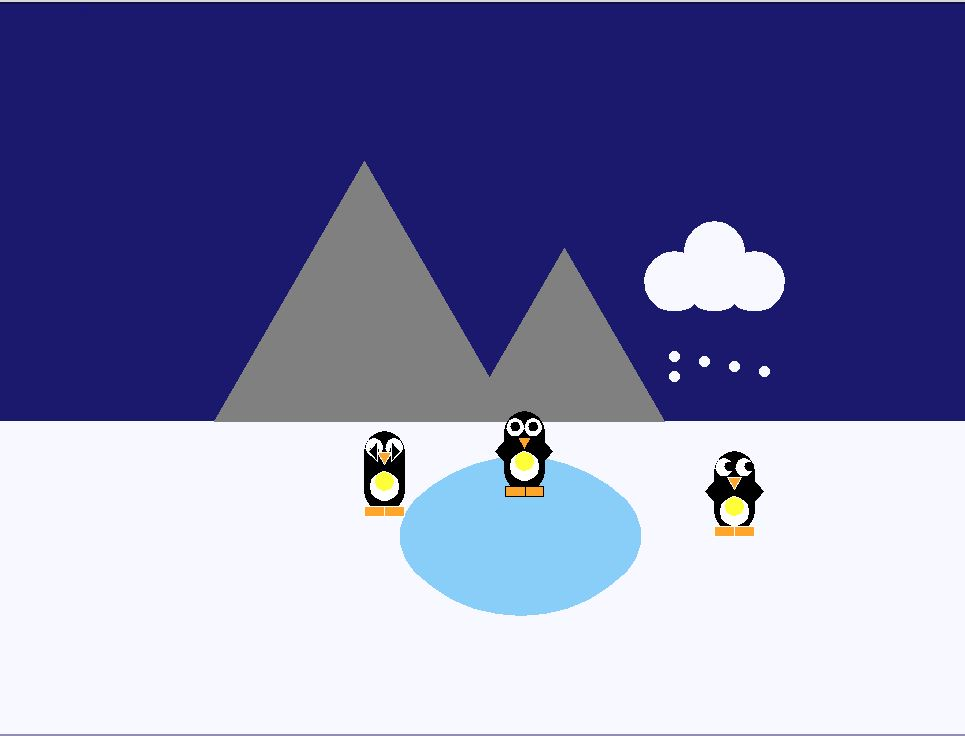
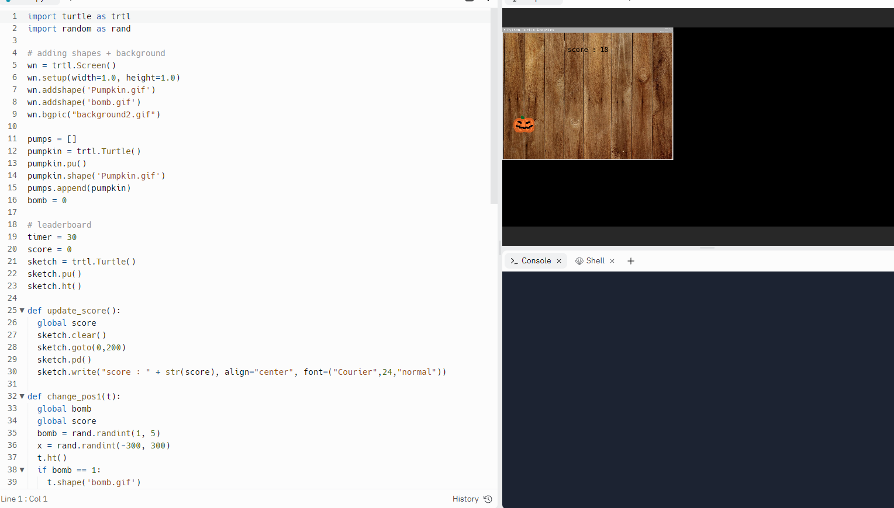
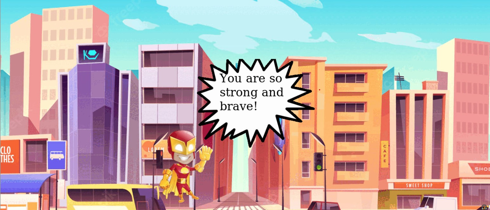
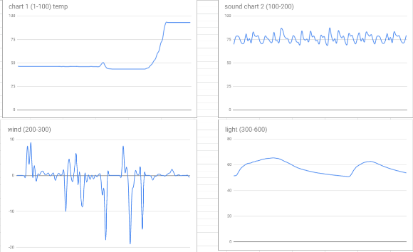
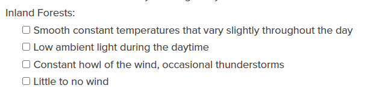
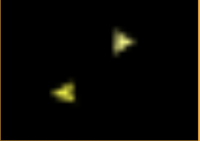
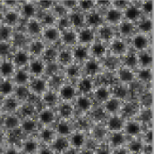

Home
Portfolio
About Me
This is my Portfolio Page!
1.1.9 Project (A night in Antartica)

This codeing project by me and my partner shows a landscape image of a few penguins playing hide and seek.
There are constant falling snow from the cloud in a loop.
There are also a few background features, such as a ice pond, or a mountain.

In this game, Pumpkin Clicker 101, there will be pumpkins falling from the sky that you would have to click to recieve 1 point
we coded it so that if you miss a pumpkin, you will be deducted a point. In our code, there is a 1/5 chance that a pumpkin
would spawn as a bomb, clicking that would recieve a penalty of 5 points. Our game takes reaction time, percision, and speed.

In this codeing project, we created a E-card for the childrens hospital.
It begins with a big red button, and we all know kids love to press big red buttons.
Then, a well known super hero flys in with inspirational music in the background.
He starts to tell the kid some inspirational messages, like you are strong or get well.
Once hes done telling the kid he is strong, he tells him his farewells and flys away.


This is the revolutionary game called REVERSE PONG. We took the 1v1 pong game and made it into a team work and collaboration game.
Our game helps with hand eye cordination and communcation with your partners. We also promote healthy eating and exercising.
By moving ur character up and down trying to catch the Fruit Platter.
Using the W and S key for left player and the arrow keys for right. you will be able to control your character's movements.
The scoring would be calcutated for the total points both players collect because we promote collaboration and team work.
 
Our data matches the data with the Inland Forest the most.
The data of sound matches perfectly since it shows constant noise at 75 hz and inland forest has constant howl of wind.
The data of the temperature matches as well, since our data shows smooth constant data, that goes from constant low to constant high.
The data of the light matches the low ambient light as well.
The data of the gyroscope also matches the little to no wind as there isnt alot of spikes.
With all the data we recieved from the rover, our final conclution is that its location is the Inland Forest.
 
Me and my partner analyzed the honeycomb complex simulation on Netlogo.
The model simulates the speed and patterns of how bees create honeycomb, and how the number of bees affect the production.
Although the simulation were lacking in information in a few places such as hw the geographical location affects the bees.
Or how the change in weather, enviorment or predators affect the productions of the bees.
The simulation still works well with the turtles being the bees and the patches being the honeycombs.
And the simulation still shows us the patterns of how bees move to create the honeycombs, and the number of bees affecting the honeycomb production.